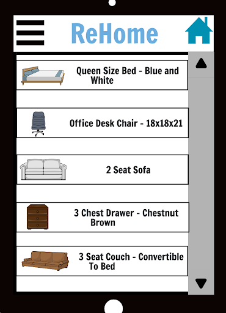

ReHome is a software system designed as an online marketplace for buying and selling used furniture, providing a specialized platform to connect local buyers and sellers. The system allows sellers to create detailed listings, including photos, descriptions, and pricing, making it easy to showcase furniture items. Buyers can browse these listings with advanced filtering options, such as location, price range, condition, and furniture type, to find exactly what they need. A key feature of ReHome is its emphasis on security and trust, offering integrated payment protection and potentially escrow services to ensure safe and reliable transactions, reducing the risk of fraud. In addition to the buying and selling process, ReHome introduces unique features to improve the user experience, such as a virtual room placement tool that allows buyers to visualize how the furniture would look in their home. This system addresses the shortcomings of general-purpose platforms by focusing on the specific needs of the used furniture market, making it easier, safer, and more efficient for users to buy and sell items.
There are 2 main types of intended users for the ReHome platform. One type of user would be the sellers who are interested in selling their furniture to others. The second are users who are interested in buying used furniture from safe sellers in their area. Below we examine the most common usage scenario for each target user.
Joey is a senior in his last semester of college. He has been living alone in his apartment close to his university for the past 3 years. Joey is planning on moving to a different state after graduation for his new job. Since he plans to move so far away from his current city, Joey wants to start selling some of the furniture in his apartment before he moves out. He needs to be able to do the following using ReHome:
1 - List his furniture for sale on the platform
2 - Add specific details about his sale to the listing, such as price, furniture measurements, photos, and more
3 - Message potential buyers who are interested in any of his furniture pieces
4- Be able to vet/get assurance that the buyer he chooses is a real person and not a scammer
5- Safely complete the sale and have the money transferred over to him securely via the platform
Joey’s ultimate goal is to be able to sell his furniture to real people in his areas without fears that potential buyers are scammers who are trying to waste his time.
Rachel is finishing up her first year at university. She has secured an apartment for the upcoming school year and is planning to move in the week after the semester has ended. Rachel is a full time student and does not have the money to buy expensive, new furniture. She also does not have a car, so she wants to be able to find furniture listings close to her new apartment so she can have a friend help carry it over. As a result, she would like to use ReHome to find affordable used furniture for her new apartment. Rachel wants a platform that allows her to do the following:
1 - Search for furniture for sale on the platform
2 - Filter for specific details such as the type of furniture, the colors, the price range, and more
3 - Message potential sellers to ask about the price, when the item will be available for pickup, and other purchase details
4- Be able to vet/get assurance that the seller she chooses is a real person and not a scammer
5- Safely transfer the money with a cash back guarantee that she can get her money back in the case of a scam
In the end, Rachel hopes to find some good quality furniture pieces from other locals without a fear of being scammed by people who claim to have furniture for sale but just end up taking her money.
Below is an example of how Rachel can search for furniture on ReHome’s interface. She can scroll through the listings and select any of them if she chooses for more information.
This is the content for section 3.
This is the content for section 4.
This is the content for section 5.
This is the content for section 6.
This is the content for section 7.